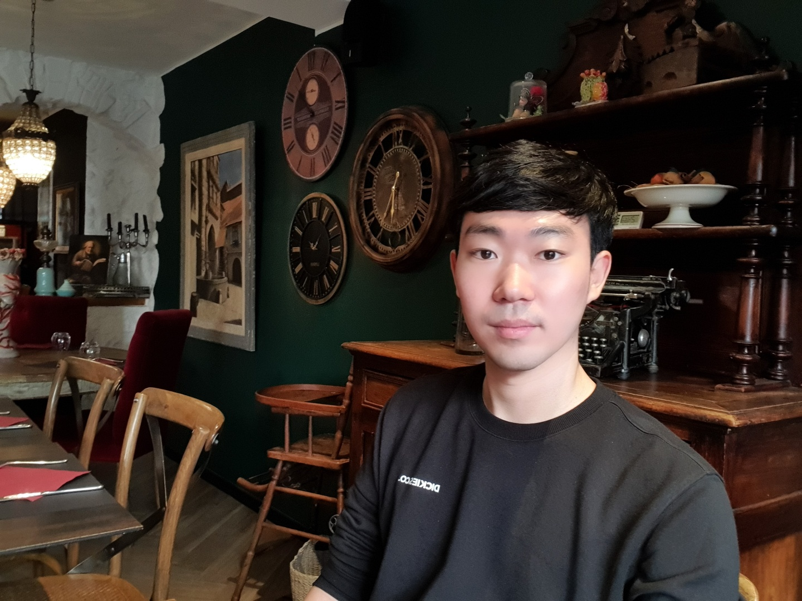
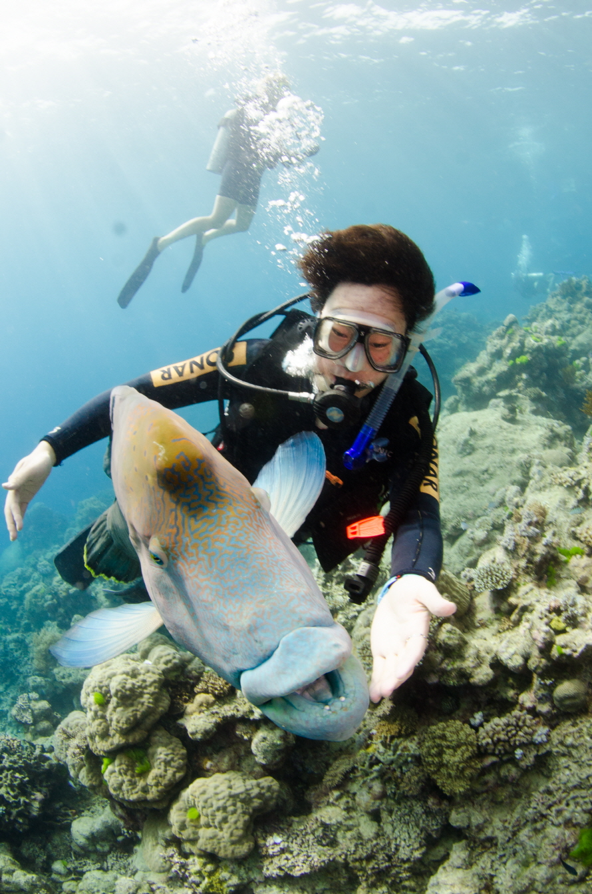
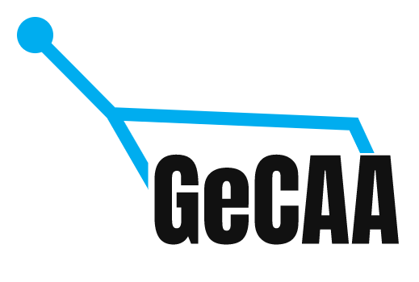
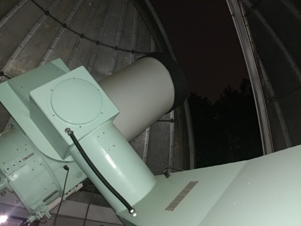
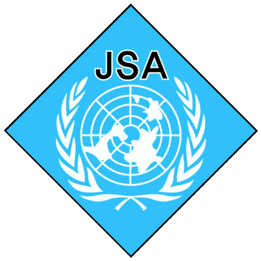
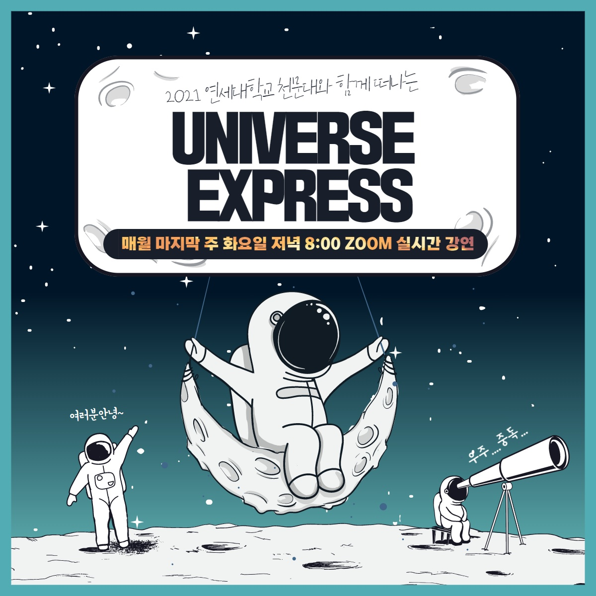

Profile

Donghyeon "Jeff" Khim (Kim) [김동현]
I am a graduate student in the Department of Astronomy at University of Arizona.
Research Interests
- The Formation and Evolution of Ultra Diffuse Galaxies
- Kinematic Misalignment between Stars and Gas
- The Evolution of Properties of Simulated Galaxies
- Comparison of Simulations and Observations
Office: 302, Steward Observatory, University of Arizona
Email: galaxydiver at email dot arizona dot edu
Education
University of Arizona (Ph.D. Program)
2021.07 - present
Yonsei (Graduate Program)
2018.03 - 2021.07
Supervisor: Prof. Sukyoung K. Yi
Research topics: "On the origin of star-gas misalignment"
Yonsei (Undergraduate)
2011.03 - 2018.02
Degree: Bachelor of Science, Bachelor of Science
Major: Astronomy, Physics
Awarded High Honors at Graduation - Magna Cum Laude
Scholarships & Fellowships
University of Arizona
- College of Science Graduate Fellowship
Yonsei (Graduate)
- Yonsei Honor’s Scholarship Program
(Graduate Course)
- Three-year full-tuition - Brain Korea 21 Plus Fellowship
Yonsei (Undergraduate)
- Korea Presidential Science Scholarship
- Four-year full-tuition - Yonsei Honor’s Scholarship Program
- Four-year full-tuition
Awards
Yonsei (Graduate)
- 2020 Fall Yonsei Merit Academic Paper award
- 2019 Korea Astronomy Society Spring Meeting, Poster award (Khim & Yi)
- 2019 The 2nd Yonsei Astro Poster Jamboree
- The best poster award
Yonsei (Undergraduate)
- Awarded High Honors at Graduation
- Magna Cum Laude - Awarded the Highest Honors (Spring 2011, Fall 2014, Fall 2018)
- Awarded High Honors (Fall 2012)
- Awarded Honors (Spring 2012, Spring 2014, Spring 2017)
Korea Science Academy (high school)
- The 3rd International Olympiad on Astronomy and Astrophysics (IOAA), Silver Medal. IOAA
Activities
Skin-Scuba Diving
- 
- "Yonsei Skin-Scuba Diving Team"
- Served as a club president - 250+ Scuba dive logs
- NAUI Master Scuba Diver (Certified in 2013)
- PADI Enriched Air Diver (Certified in 2019)
Would You Like
- "Would You Like"
- Founding member
- Served as the chief editor - Magazine aiming to popularize astronomy
- Writing and design of articles and nationwide distribution were performed
- Double expression, the pronunciation is the same as the ‘Universe’ in Korean
- Webpage (Korean)
1st GeCAA (2020)
- 
- Participated in the 1st Global e-Competition on Astronomy and Astrophysics (GeCAA)
- Korea international team mentor - GeCAA | Certificate
Yonsei Telescope Operating System
- 
- Development of the telescope operating system in Yonsei University
- Yonsei Ilsan Observatory 61cm main telescope
Military Service (2014-2016)
- 
- UNCSB-JSA
- United Nations Command Security Battalion – Joint Security Area, Panmunjom
- UNCSB (website) | JSA (wikipedia)
- Honorably discharged as Sergeant, Surveillance Squad Leader
- 2016 JSA Battalion Commendation (Contribution to the report "The Analysis of North Korean Army’s Infiltration Tactics – JSA")
- Certificate of Commendation (ROK Army Intelligence School)
- Certificate of Appreciation (JSA)
Yonsei Observatory Outreach Program
- 
- "Universe Express"
Astronomy outreach program via Youtube
- Language : Korean
- Served at "Project Student Director"
Student Council Activities
- Yonsei University Student Council
- Served at "The Office of Education Support" - Yonsei University Student Club Council
- Served as the director of "The Office of Sports" - Yonsei Astro Graduates General Meeting
- Served as a member of "The Primary Assembly of the Astro Graduates General Meeting"